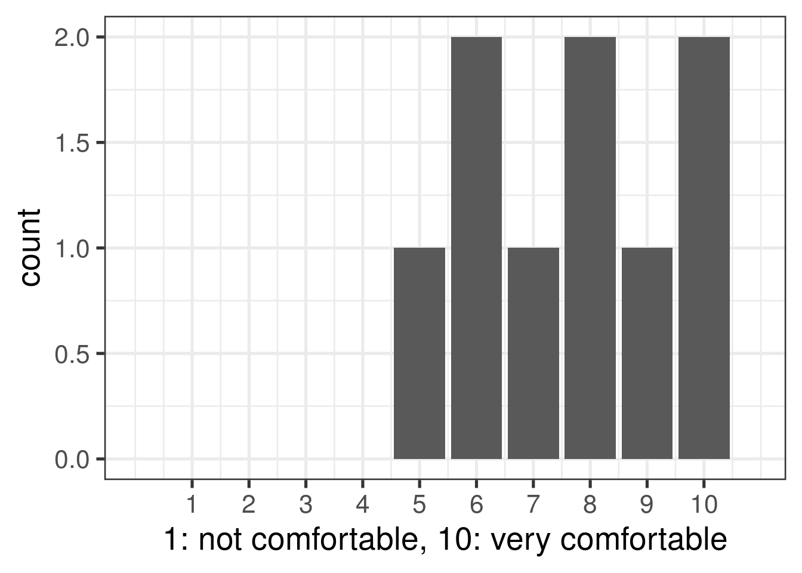
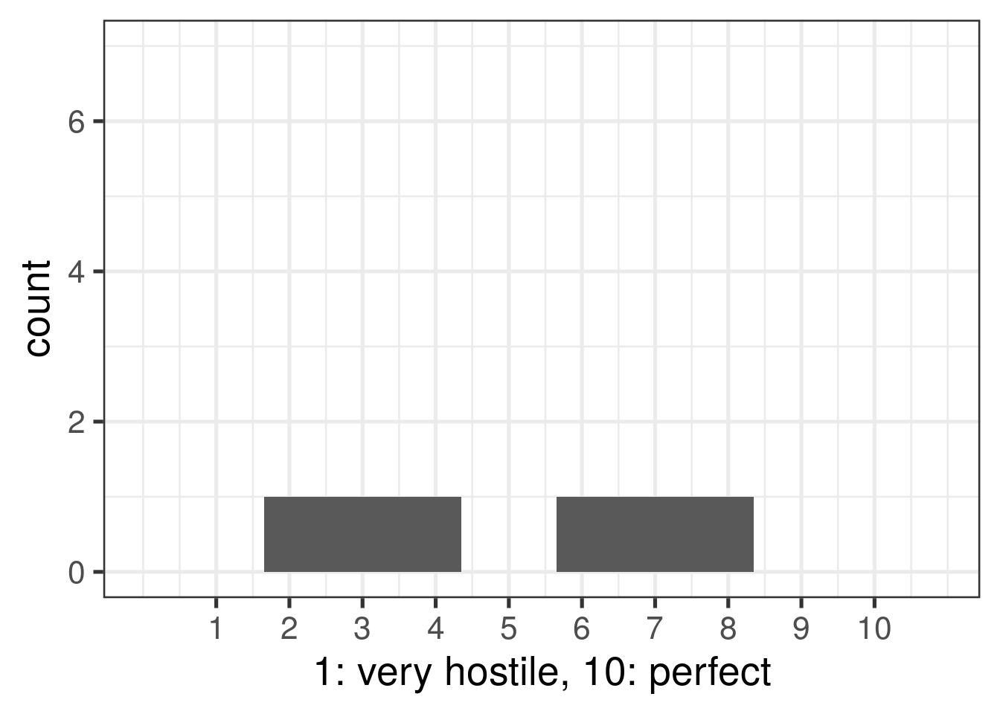
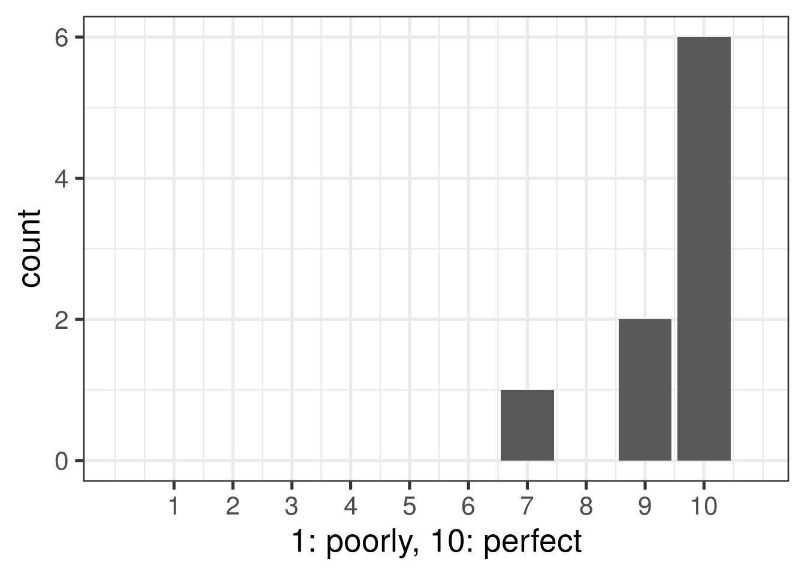
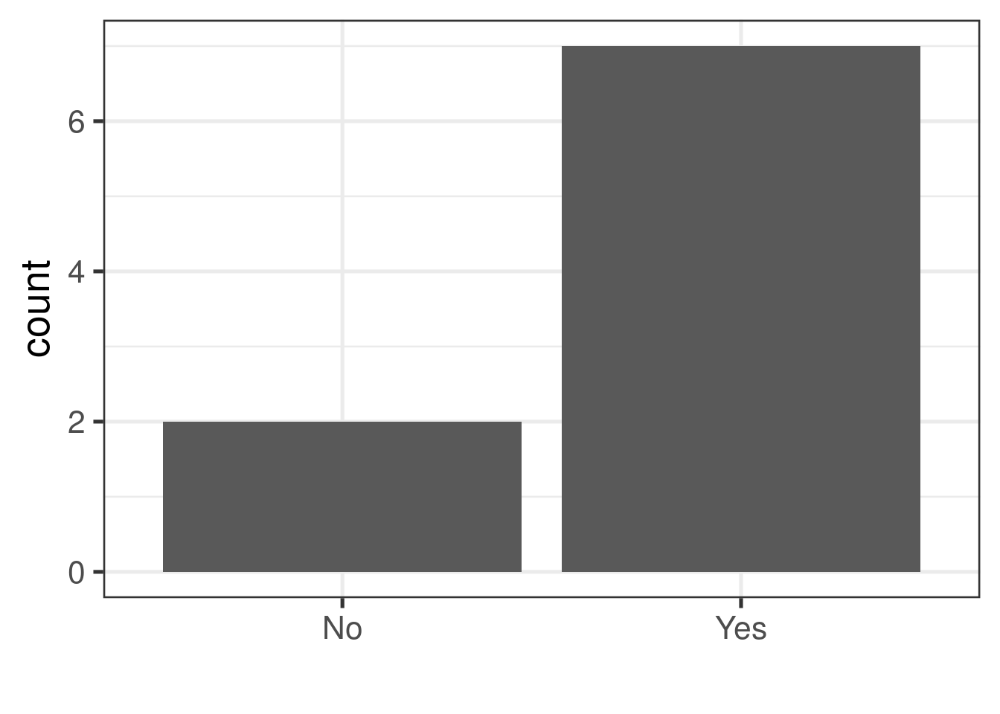
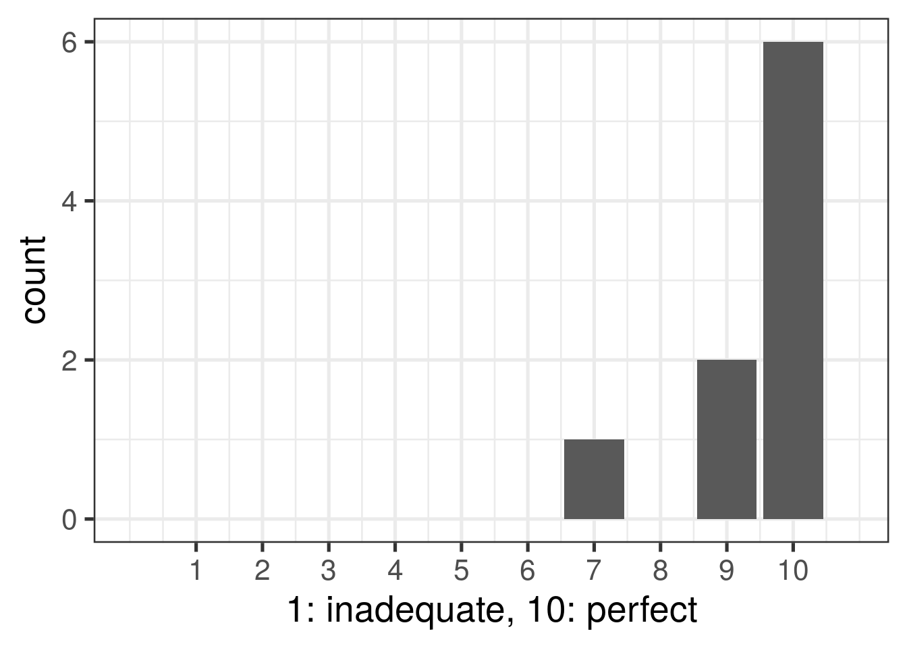
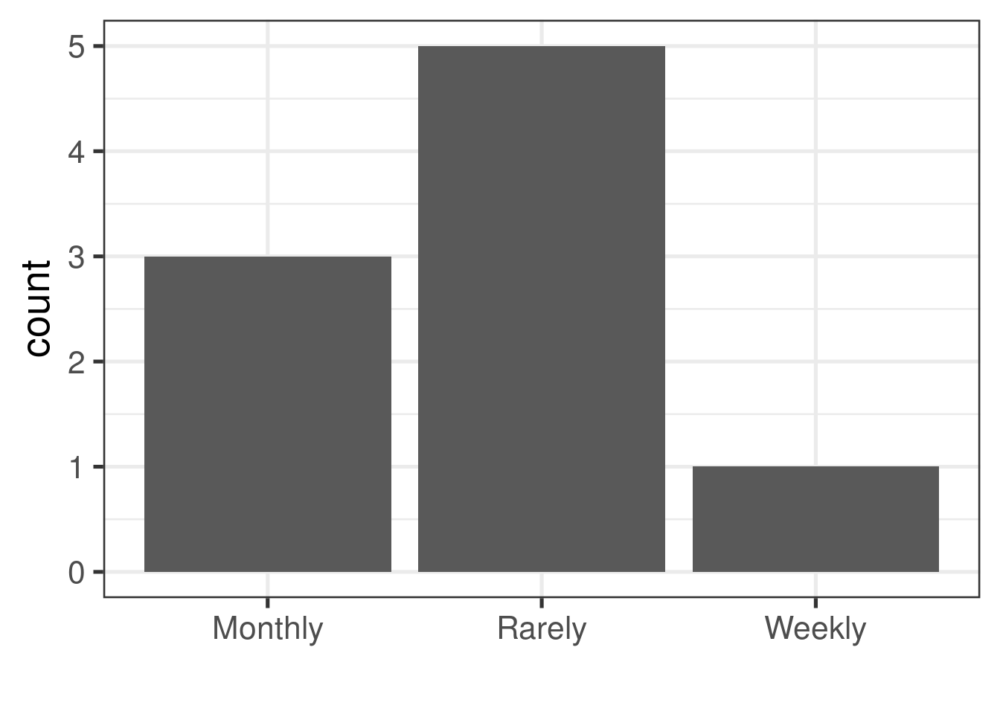

1 Survey 2022-04
1.1 What 3 words would you use to describe our team culture?
- Friendly, supportive, relaxed
- supportive, guiding, encouraging
- supportive, friendly, ambitious
- Collaboration, Diversity, and Expertise
- collaborative, energetic, flexible
- collaborative, non-judgemental, patient
- Collaborative, Productive, Open
- conscientiousness, helpfulness, brilliance
- motivated, productive, rigorous
1.2 What do you like most about working here?
- My immediate colleagues are great people
- Collaborative spirit
- people are open to new ideas, aiming to excel at their own work and also help others
- getting to learn the skills I want to learn
- Leo has a genuine care for the personal and professional success of each of his team members, and as busy as he is, it really reflects.
- Working with really cool data and smart friendly people. Feeling supported to learn as I go, and when I make mistakes there is no crisis. Also that my personal growth is valued and encouraged.
- People are open to ideas from anyone at any level.
- pursuing one’s interest, expanding knowledge, adding more skillsets
- There is a lot to learn and plenty of freedom to decide which projects to work on.
1.3 What do you like least about working here?
- Between compensation, attitude, and just poor collaborators there are large parts of the institute that have alienated themselves and I no longer have interest in working with. This feeling has moved from a couple PIs to include administration and leadership as well.
- I am pretty much satisfied.
- I do not wish to answer
- NA
- It can feel easy to get lost regarding the purpose or plans behind projects I work alone on.
- sometimes there could be communication difficulties (but very rarely in this team, this is rather a wider LIBD issue)
- Worried that there is a ceiling for my career at LIBD. I also get the feeling that there are some difficult politics that I’m not totally aware of, and the institute as a whole feels a bit disconnected.
- It is just right.
- Wish the team were bigger & more diverse!
1.5 Is there something that could be provided to make you happier?
- Some kind of incentive to help drive motivation and innovation would be a start
- I do not wish to answer
- Nothing in particular, I feel happier being a part of the team and working on different projects.
- Not sure
- I’m quite happy.
- I am good now!
- Higher salary
- Just more team members because everyone has quite a lot on their plates
- more computing power and storage can always help (obviously not really team related though)
1.7 How comfortable do you feel sharing personal concerns (housing, financial, family, physical or mental health) with me?

1.10 Have you experienced or witnessed a hostile work environment in the team? (bullying, gender harassment, sexual harassment)
## Warning: Removed 1 rows containing missing values (geom_bar).
1.12 What are some ways that we could improve communication in the team?
- Being in person could help. Also I think there’s going to be more pressure on us to give services to other labs and Leo should be the point person for that. I don’t like being reached out to by other PIs to ask me to do things outside my responsibilities.
- It’s sometimes hard to see how projects are connected or who is working on what. Team meetings that clarify this are helpful
- Maybe take time (like 10 min) during the Wednesday team meetings to check in with everyone about progress on projects. It is sometimes a really long time before the cycle of presentations to get all the way around, and its nice to hear the progress people have made. This also might be a good way to make connections about similar problems/questions. Also better reminders about what is happening at the team meeting from the person going to present would be helpful for the rest of the group to prep.
- I feel we communicate well but sometimes the important information is lost in slack messages but there has never been an issue.
- Slack, Calendly, and Google doc have been very powerful, I think, to facilitate our communications.
- Slack’s good.
- NA
- weekly team meetings could include some (voluntary) sharing of work/issue updates or questions for the team, instead of the entire hour being allocated to full presentations
- N/A
1.13 Do you feel that lab rules/policies are clear? Are there unspoken rules or policies that you feel should be more clearly communicated?
- N/A
- They are clear, and it’s not looked down upon when I want something clarified that may be super obvious to others.
- As a collaborator, I don’t know so much about the lab rules/policies. I wonder where I can find them, though.
- Pretty Clear
- Not really. I don’t feel like we have many lab rules or if we do I don’t know what they are.
- Yes
- All policies are clear.
- rules are quite clear
- How to handle if other PIs/groups ask for your help (something that would take more than the dsgs are designed for)?
1.14 Are there policies you feel should be explicitly written? If so, please explain which ones.
- No, I think it is pretty clear and people are helpful and understanding to explain something again.
- no
- N/A
- I think it’s important to have clear policies about authorship and division of work on projects.
- No
- Not currently
- NA
- N/A
- No
1.15 Do you feel that the same rules apply to everyone in team? If not, please explain.
- yes
- Yes, no injustice or favoritism
- Yes
- Yes, but equitably
- yes
- N/A
- Yes
- Yes
- Yes
1.17 Do you feel empowered to make suggestions to your colleagues to improve the team culture/ organization?
1.18 If you do not feel empowered to make suggestions to your colleagues in the team or to me to improve the team culture/ organization, please tell me more about this.
- I said yes to both questions :)
- n/a
- NA
- N/A
- na
- I feel empowered to suggest changes.
- I don’t really feel comfortable providing negative feedback about the team.
- N/A
- Yes
1.22 Is there something that could make these meetings more useful or productive?
- Maybe try to have agenda items on paper or the screen, so we don’t go off too far on tangents
- na
- There was a stretch this year where a lot of meetings got canceled and it made things very hard to manage.
- planning my own questions better and improving my own communication skills
- N/A
- These meetings are pretty useful, understanding the background/purpose of what one is doing and why makes it easier to understand things. So maybe a background in the beginning would be more helpful.
- Could spend more time going over code for important analysis
- No. I really like being able to record the meetings and watch them again.
- I think we’ve been using the meetings very efficiently and time-efficiently. The way Leo is assigning issues to assignees at the end of meeting also works very well, I think.
1.23 Do you think the current system of formal scheduled weekly one-on-one meetings is working? Should these be less frequent, more frequent, or stay as is?
- Stay as is
- I think they’re good as they are.
- This frequency is good in combination with weekly project-specific meetings.
- They can stay as-is
- fine as is
- stay as is
- The current system work well for me. I think that the Monday meetings are very helpful for me planning my week! I also feel like we make one-on-one meetings work when more are needed.
- Between ‘stay as is’ and ‘more frequent’: depending on the pace of work/progress
- stay as is.
1.24 Do you think you would benefit from more formal feedback on your progress?
- not sure
- No, the current amount works fine
- yes
- Sure, I sometimes feel like I could benefit from code review, especially for “by the book” type analysis.
- Yes, formal and honest feedback always helps.
- yes
- Yes!
- Yes
- No
1.25 How supported do you feel by me, and do you think that you are getting the mentoring, career advice, and general guidance to succeed?

1.27 Do you want to have an Annual Mentoring Meeting to go over your Individual Development Plan and discuss post-PhD or post-Postdoc plans? Leo edit: see https://lcolladotor.github.io/bioc_team_ds/career-growth.html.

1.28 What kind of advice or information would be useful to discuss at such an Annual Mentoring Meeting?
- N/A
- Pointing how which skills or areas of knowledge need to be improved.
- Maybe resources as to what kinds of jobs/trajectories others in computational biology typically experience, so we feel more familiar and connected with the bigger data science world
- n/a
- Going over the progress, talking about how to constantly keep improving and getting better at what you do, opportunities to branch out based on one’s interest
- Given the raises and past experience with the annual review I don’t see much point. I met my goals last year and still got a bad raise.
- General future career plans and how current projects at LIBD are helpful for long-term goals
- What are the different types of career paths that can be taken for someone in Comp Bio and how does one prepare for these paths?
- Career planning, milestones to hit for advancement at LIBD. Conferences, workshops, or other opportunities I should have on the radar.
1.29 Do you have any explicit feedback on how I can improve my mentoring style?
- So far, Leo has been a great mentor. I don’t have anything specific/constructive in my mind. But, I think I can talk more about this as I am interacting with Leo more often :)
- no
- You’re awesome.
- No, please continue to be the best mentor
- N/A
- No
- Seems to be fine
- NA
- Not really!
1.33 Is there something that could make team meetings more useful or productive?
- N/A
- Cannot say much as I do not participate in the weekly team meetings. But maybe going over some basics as we work with different people who have different levels of computational knowledge. Going over the basics in brief will help everyone come to the same a page.
- There are tons of projects happening which can be hard to keep track of when you’re not a part of them. Maybe we can have a google doc or website where each team shares a few resources for people to take a look at and get a better idea of what is happening if a project sounds interesting to them.
- Not sure
- I feel like Wednesday team meeting has mostly been replaced with journal club/individual presentations, would be good to sections out time to discuss work/progress/general concerns that the team has.
- Not really
- perhaps team meetings could benefit from 10-15 min of (voluntary) updates or raising any team or work related concerns, instead of the entire hour being allocated to full presentations or code sharing etc. from a single person
- Sorry, since I don’t participate in Leo’s team meetings, I don’t think I can answer this question.
- I feel like meetings at the institute could benefit as a whole from having an agenda
1.35 Is there something that could make sub-group meetings more useful or productive?
- N/A
- Group meetings are really helpful when they’re among people that are working on very closely related projects. However, in many of the meetings there are too many people. I think the smaller the group meeting, the more productive it is.
- A lot of people will still have meetings without giving much to prep with.
- No, stay as it is.
- Sorry, I don’t get what sub-group meetings are.
- some of these sub-group meetings could be replaced by asynchronous communication in writing - by Slack or email
- No
- na. Sometimes we end up doing things in our meeting that are different from my expectations/agenda. That tends to throw me off a bit, but perhaps it’s the nature of the work.
- More frequently developing an agenda (especially if multiple groups have updates/work to present)
1.37 Is there something that could make the journal club more useful or productive?
- I wonder if we can have it in a smaller group for those who are not as extraverted. Having it in a spatial group meeting is sometimes overwhelming.
- no
- Maybe talk about how useful the journal club tools or packages are for our data.
- I think journal club should only be done in sub-group meetings
- There was talk of reviewing “classic” bioinformatics methods papers, but that has not happened yet. Choosing papers that are more relevant to everyone in the core group would make this more engaging and worth-wile. Also making sure paper presentations are the correct length/scope.
- More discussion based
- N/A
- If we have a Q&A session where each person attending is encouraged to ask a question, or maybe just post a question on slack, then that’s more incentive to read the paper.
- N/A
1.40 Do you perceive that there is any favoritism in the team? Please elaborate.
- No
- No
- Not really - I would be surprised if there is someone who feels it that way.
- No.
- No
- no
- No
- no
- No, but I am realizing I’ve been dealt a bad hand with some projects.
1.41 Are there any issues with collaborations in the team that are not working? Please explain.
- No
- So far, I’ve seen no issues.
- No
- No
- No
- N/A
- no
- no
- No
1.44 Please rate whether you feel the team provides you with the tools and technologies you need?

1.45 Do you feel you have received proper training to perform the techniques required for your work?
- Yes for the most part, and I feel that I am given the right resources when needed.
- Yes
- Yes
- Yes
- yes
- I feel like I’m gaining the proper training.
- yes
- N/A - I rely on others for their expertise for now.
- Mostly yes
1.46 Is there further training you would like to receive to help you accomplish your goals?
- No
- nothing specific
- I would like more training in statistics
- Recommended free resources for learning/reviewing biostats; maybe a central resources for reviews on technology/methodology, etc. would be really useful
- Python
- Maybe some sort of single cell workshop/bootcamp
- yes
- Yes, I am thinking about it, and I would get back to Leo once I have a better idea about the type of training or what I want to get trained on.
- Maybe, depending on the task.
1.48 How often do you encounter issues that could have been averted if things were better organized? E.g. missing README or GitHub repository.

1.49 Please tell me more about the kinds of organizational issues you have encountered and any suggestions to improve such issues.
- na
- I mostly only work with my repos
- N/A
- Collaborators not using JHPCE/github for their work, and I don’t know how to fix this except keep asking & teaching. But I like the direction we have been headed with JHPCE/project organization, feels like a big improvement from last year!
- N/A
- I have a hard time finding or accessing data that is used in some scripts. If I want to re-run someone’s script with their original data, usually I can’t find it.
- Code outside of repositories or lacking comments or background context (like a README)
- Haven’t faced any yet,
- no issues
1.53 If we had the funds to hire one more full-time person, what kind of person should we hire and what role would they play in the team?
- Staff Scientist with engineering heavy abilities
- Someone who is more experienced than us and has good mentorship skills
- A staff scientist still makes sense, who could be another source of knowledge
- N/A
- A staff scientist who could share more of the mentoring roles as Leo
- Staff scientist that could help spread out big projects/spot check work
- I think it could be good to have someone who’s dedicated to teaching/lecturing/training.
- a bioinformatics or biostatistics scientist with a strong Computer Science skills to address the more complex computational problems and algorithms
- I don’t know
1.54 Is there something that you experienced in a previous job that you wish we also did here?
- Frequently we updated on what progress others were making.
- NA
- no
- No
- N/A
- Culture surveys for the broader institute
- This place is a way better than my previous workplace almost in every aspect - this is not a lie.
- No
- NA
1.55 Are there any concerns or other areas of the team you believe could be improved that have not been addressed in previous questions? Please list any other areas you think could be improved or should be addressed.
- no
- N/A
- The gap in pay due to inflation and a robust biotech market is such that we will continue to lose colleagues and have vacancies if we cannot figure out compensation.
- No. I think Leo is a great mentor
- This is pretty thorough!
- N/A
- Nope.
- no
- No
1.56 Finally, did you find this survey useful? If yes, how often should the survey be conducted?
- Yes s, annually
- Yes.
- Yes. Yearly.
- Yes, somewhat useful. Yearly seems adequate.
- Yes, it felt more useful the first time we did it. Its pretty long and since there were no drastic changes from last year so it felt a bit redundant at times. Yearly is probably the correct interval but maybe extract some questions sections out for their own survey, for instance the “Mentoring” questions may be best to ask after we have done performance reviews/career meetings for the year so that experience is fresh. I think if it was more concise I could be more sure I gave high quality answers for each point.
- Yes, annually is ok
- Yes, yearly sounds perfect
- Yes! Maybe twice a year
- It is useful. As a collaborator, I found myself limited or found it somewhat hard to do the survey because I think many of the questions were specific to Leo’s team and culture, which I might not be familiar with. But, I would agree that doing this often will be helpful as a sanity check for the team environment.